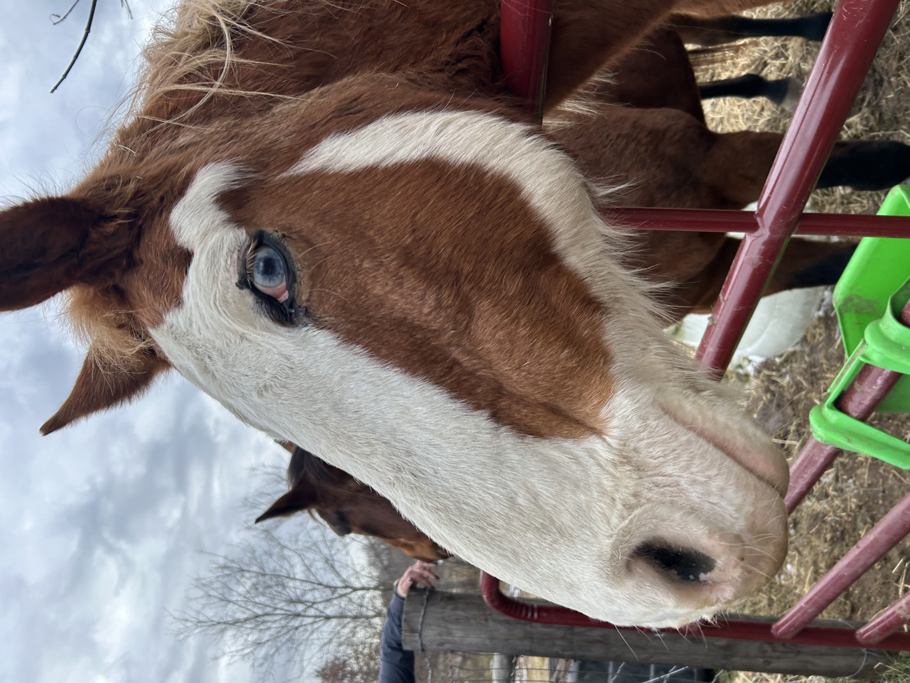
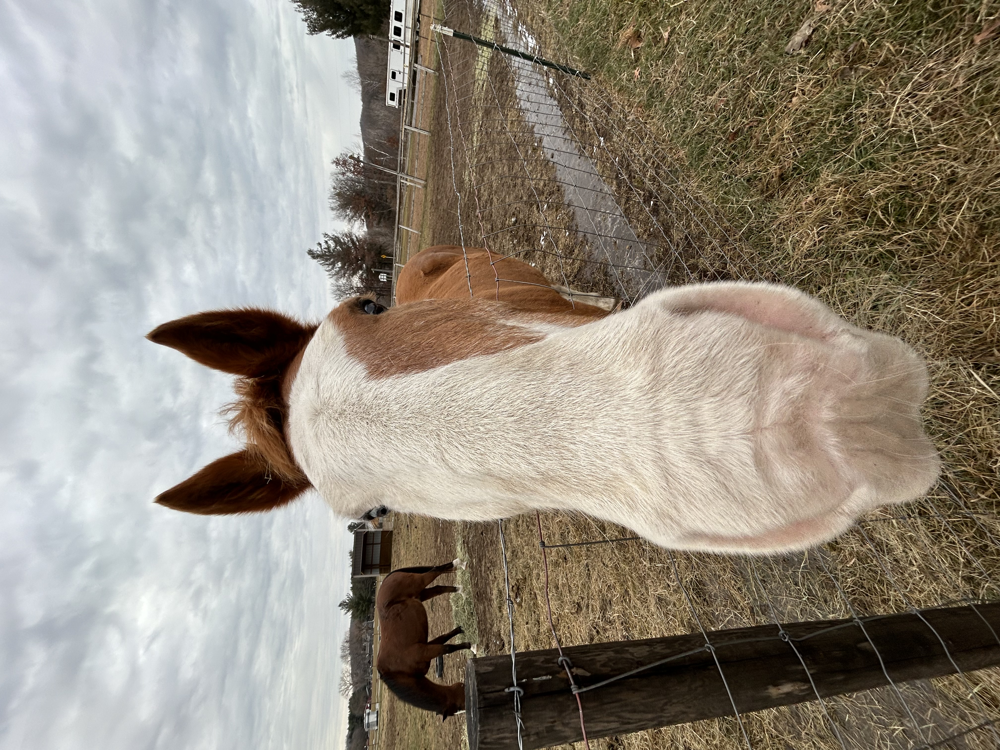
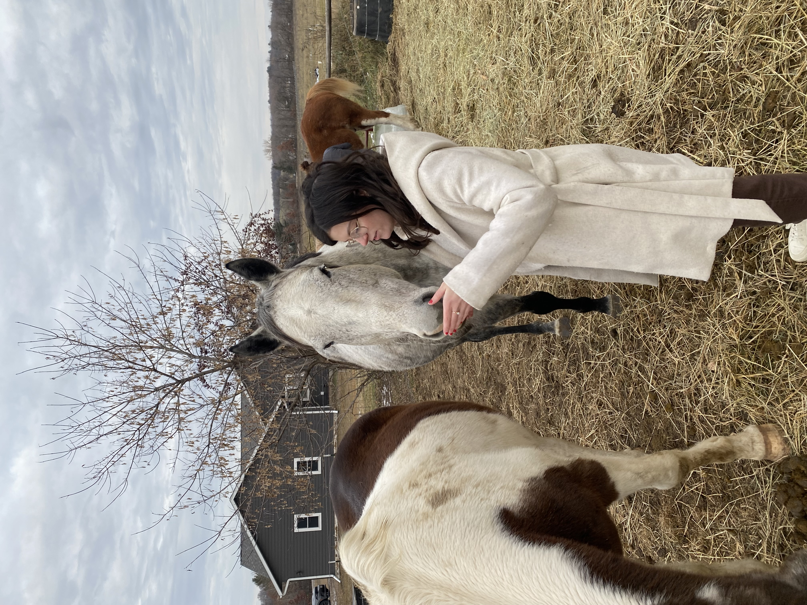

Meet Ty!
Ty is an Arab Cross Gelding who absolutely loves treats and attention. He is a leader of the herd with a gentle soul. Although he has no teeth he can still eat grain and his spunky personality brightens the sanctuary.
Meet Cappy!
Cappy, also known as King Sized Cappuccino, is a registered Paint. As a retired lesson horse, he now lives his days relaxing on the pastures. He is on special medication due to Cushings disease, so he requires extra care. Personably and quirky, Cappy is sure to get a smile out of you.
Meet Babe!
Babe is a Paint Mare and is around 32 years old. Babe is a very sweet, “in your pocket” horse. Although she is extremely friendly, she also has a bit of a sassy side. She loves eating treats and following others around the ranch!
Meet Amigo!
Amigo is a 14 year old Arab cross Bay pony. He is Amandas daughters horse and they love to participate in fun shows together. Seeing as he is very patient and a total sweetheart, he is great with kids. He does require a special feed because he does not have many teeth, so his care can be extra costly.